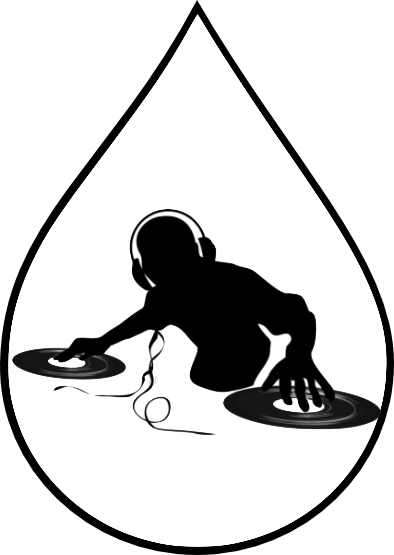

The DJ Language
William Falk-Wallace
Hila Gutfreund
Emily Lemonier
Thomas Elling

Mission
MUZAK N JUNX
Tools Used
writelatex.com
: real-time co-editing LaTeX documents
git
/
github
: code and documents storage and version control
dropbox
: references files and static/large file transfer and storage
google drive
: coediting, versioning and storage for management documents and notes
google hangouts
: remote meetings, work sessions, and discussions
Deck.js
: presentation javascript library (this presentation)
Twitter Bootstrap
: presentation slide and main webpage styles
Sublime Text 2
: code editor with OCaml, Java, HTML/CSS/JS, and Make extensions
Eclipse
: Java IDE for java output code practice
←
→
/
Go to slide:
#